第一步:登录腾讯云
地址:
https://cloud.tencent.com/login
以下图片有些需要放大比例才能看得清楚
第二步:进入控制台
地址:
https://console.cloud.tencent.com/
1).登录后点击右上角”控制台”
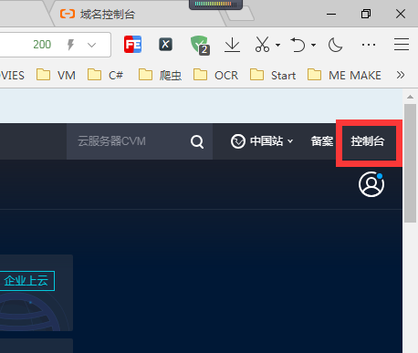
2) 进入”云直播”
第一次进入可能会提示开通云直播,按照引导步骤开通即可
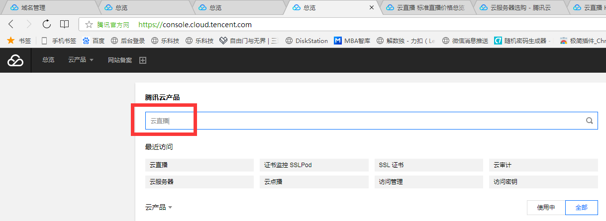
云直播界面如下,一定要把计费模式切换为"日结流量计费",默认是带宽计费,切换后次日生效,也就是说如果当日就是测试直播的话可能会收费,应该几毛到几块,并且购买相应的流量包,否则收费相对比较高
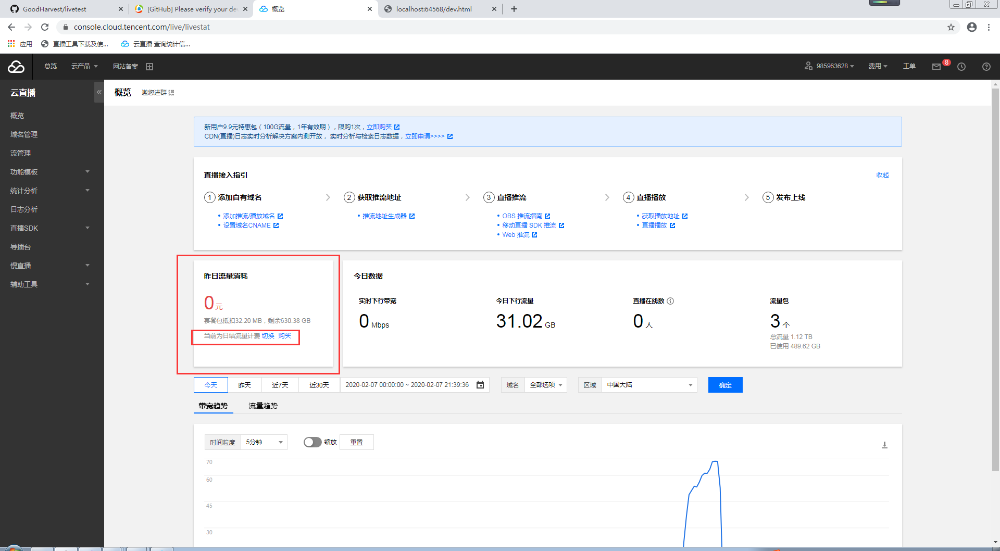
可参见腾讯自有引导(如下图)
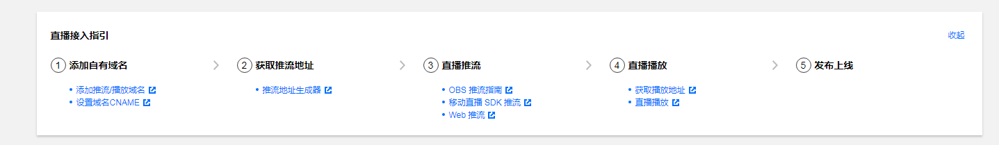
亦可继续往下看参考本次引导
第三步: 添加自有域名(菜单栏左侧)
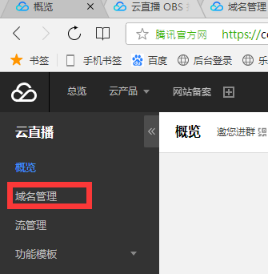
此处需要两个域名,一个是播放域名,一个是推流域名,如下图
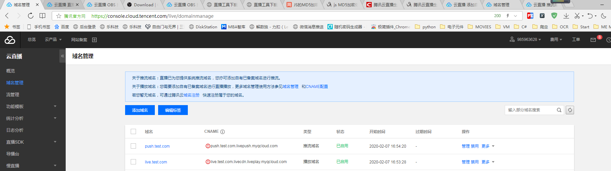
此处我们使用的是自有域名(如果对域名不懂的话可以联系我们帮忙注册并备案,因为腾讯,阿里都是国内运营商,必须要绑定备案过的域名)
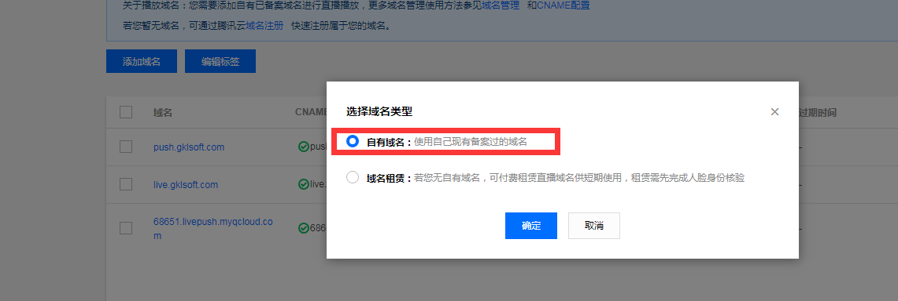
首先添加播放域名,填写live.xxxx.com live是本人自定义的,你也可以使用
bofang.xx.com,bf.xxx.om 等等,类型选择”播放域名”选项,加速区域选择”中国大陆”,如果境外观看用户较多的话可以选择”全球加速”,但是全球加速的流量腾讯需要另外收费.
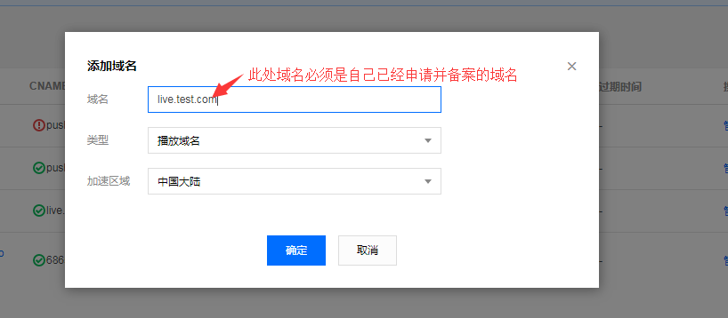
然后添加推流域名,push.xxxx.com,push也是本人自定义,也可以定义其他名称
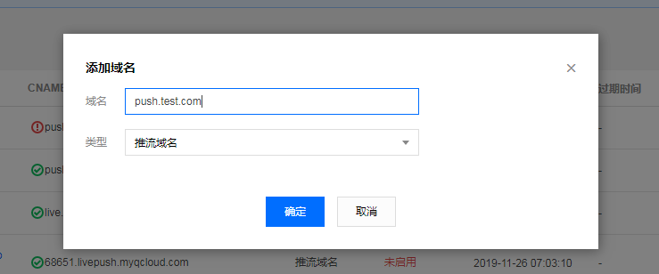
添加两个域名后,会提示CNAME未配置
如果不会解析域名请点击链接
https://cloud.tencent.com/document/product/267/19908
配置好后 点击推流地址后面的”管理”
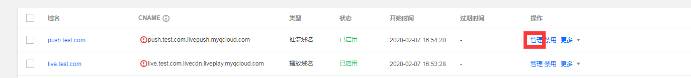
点击推流配置 把鉴权关闭,腾讯会提示”关闭鉴权可能导致盗推风险，建议您开启。”,
本人为了方便考虑关闭了鉴权,如果你需要鉴权可以按照他的代码实现鉴权,鉴权是为了防止被人盗用推流
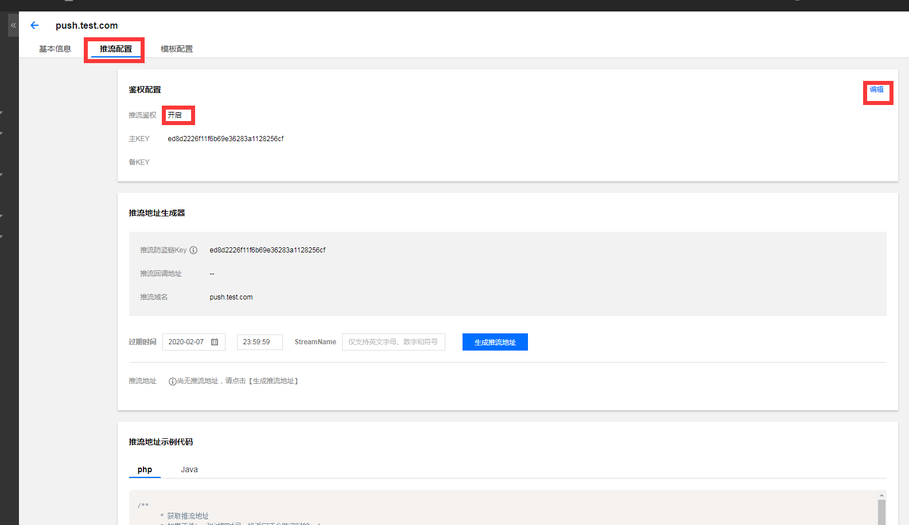
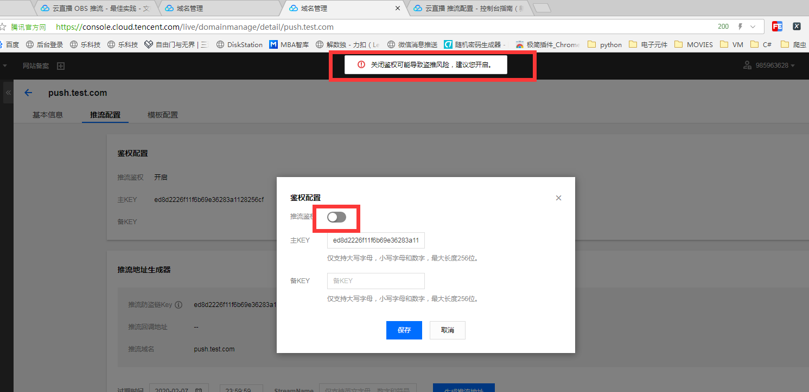
第四步: 推流和播放
因为我们使用的是三方的云直播服务,所以不用考虑服务器性能和CDN加速的问题,也就是说理论上我们的直播是可以同时开无数个直播间的.
那么如何创建直播间,从技术上来说一个推流地址就是一个直播间,如下
RTMP 推流地址格式为rtmp://domain/live/StreamName
其中：
domain：直播推流域名。
AppName：应用名称，默认为 live.
StreamName：流名称，用户自定义，用于标识直播流
,前面为官方说法,我称
StreamName
为房间名称
推流地址和播放地址示例::
如果推流地址是rtmp://push.test.com/live/zhibojian1
那么他的播放地址就是
http://live.test.com/live/zhibojian1.flv (此地址flv协议,一般为电脑端常用)
http://live.test.com/live/zhibojian1.m3u8 (此地址是hls协议,手机端基本只能使用此协议)
zhibojian1就是房间名称,同样我也可以使用zhibojian2 zhibojian3 .....等等
但是如果同时没有多人直播的话 一般只需要一个直播间即可
到目前来说就可以测试播放了,
电脑可以使用OBS推流 教程地址如下
https://cloud.tencent.com/document/product/267/32726
如果是手机推流请使用微信扫描下方二维码使用小程序推流
进入后点击RTMP推流
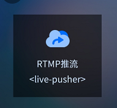
把上方自定义的推流地址粘贴到输入框点击开始即可
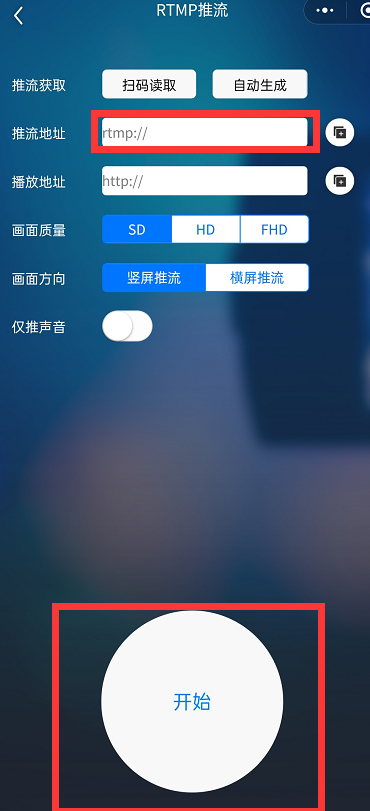
到此处直播人员的任务完成了,那么怎么播放呢,我们可以使用多种办法播放,比如使用VLC播放直播流,但是还需要用户下载软件然后一顿操作,比较麻烦,最简单的就是开发人员麻烦一些,用户一键操作
此处可以参考我编写的代码
https://github.com/GoodHarvest/livetest.git
把如下两个变量改成你的对应协议的播放地址即可,然后把网站发布到你的域名对应的服务器上即可,美工基础较差,功能还算能用,后期会完善在线人数,弹幕等功能
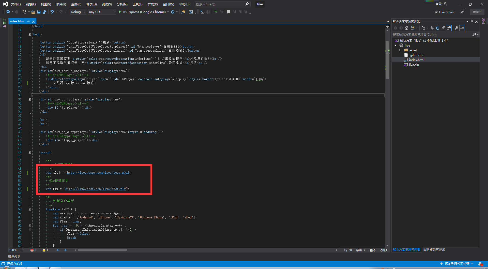